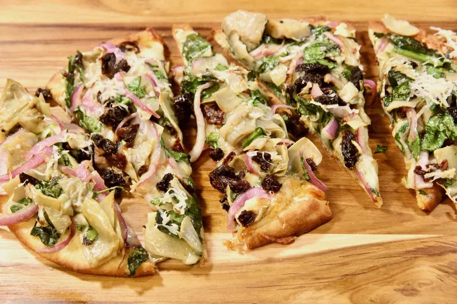

Spinach Artichoke Garlic Naan Pizza

Description
If you're a fan of artichokes and spinach, just wait until you taste this
flavor bomb combination on a garlic naan flatbread pizza.
Ingredients
- 1 (9 inch) garlic naan bread
- 2 ½ tablespoons olive oil, divided
- ½ teaspoon minced garlic
- 2 teaspoons minced fresh parsley
- ½ cup shredded mozzarella cheese
- 3 tablespoons shredded Parmesan cheese, divided
- 1 cup baby spinach, roughly chopped
- ¾ cup marinated artichoke hearts, drained and chopped
- ½ cup halved and thinly sliced red onions
- 2 tablespoons chopped sun-dried tomatoes
- salt to taste
Steps
-
Preheat the oven to 400 degrees F (200 degrees C). Line a baking sheet
with parchment paper.
-
Combine 1 1/2 tablespoons olive oil, garlic, and minced parsley in a
small bowl; brush onto the naan.
-
Sprinkle naan with mozzarella cheese, followed by 1 1/2 tablespoons
Parmesan cheese.
-
Toss spinach, artichoke hearts, onion, sun-dried tomatoes, and salt with
remaining 1 tablespoon olive oil. Spread evenly over the flatbread.
Sprinkle with remaining Parmesan cheese. Transfer naan flatbread to the
prepared baking sheet.
-
Bake in the preheated oven until the bottom and edges start to turn
golden brown, 10 to 12 minutes. Slice and serve warm.